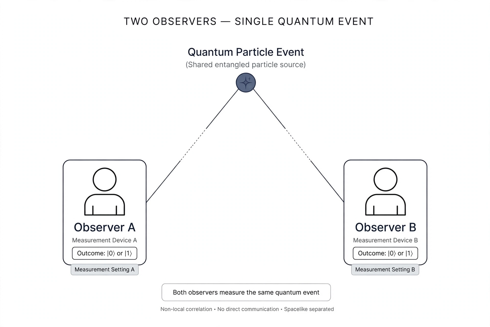

Relational quantum mechanics (RQM) is an interpretation of quantum mechanics which treats the state of a quantum system as being fundamentally relative to the observer — or, more precisely, to any other physical system with which it interacts. It was first proposed by the Italian theoretical physicist Carlo Rovelli in 1994, drawing inspiration from the way special relativity made quantities such as simultaneity observer-dependent.

The central claim is that there is no "view from nowhere": a quantum event — a variable taking a definite value — is real only relative to the system it interacts with. What is a definite measurement outcome for one observer may still be an entangled superposition for a second observer outside the interaction (the "Wigner's friend" scenario), and RQM accepts both accounts as correct relative to their respective observers. Consistency is recovered because observers can only compare notes through further physical interactions.
RQM thus denies absolute, observer-independent states and treats quantum mechanics as a theory of relations and information between physical systems. It dispenses with any special role for consciousness or macroscopic "measurement" devices: any interaction can constitute an event.
RQM sits among the family of interpretations that take quantum states to encode information or relations rather than literal physical waves — it is often compared with QBism and with the Copenhagen interpretation, from which it differs by extending "observer" to any system and by avoiding a classical/quantum cut. Critics debate whether its relativisation of facts fully resolves paradoxes raised by recent "extended Wigner's friend" experiments and no-go theorems.
From Wikipedia, the free encyclopedia.